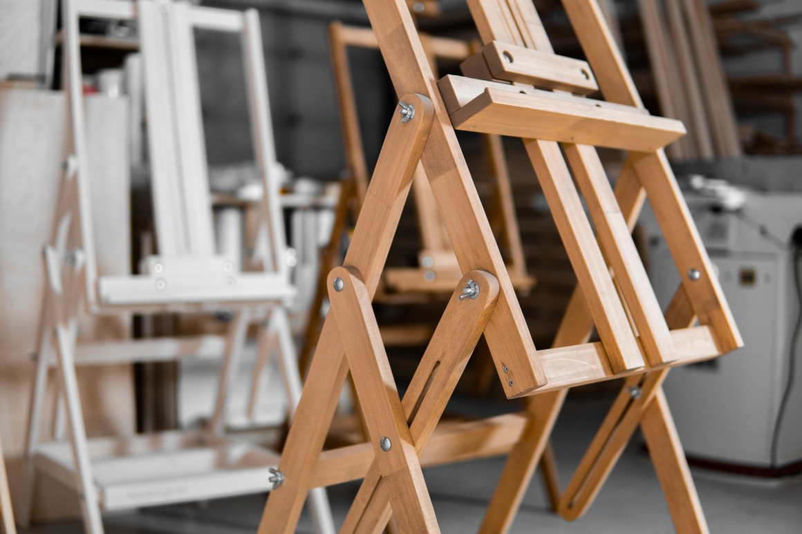

Многофункциональный мольберт, который не оставит равнодушным как начинающего художника, так и профессионала.

Главная особенность мольберта — его регулируемая рама, угол которой можно изменять в диапазоне от 90 до 180 градусов. Данная конструкция предназначена, в первую очередь, для написания картин долгосохнущими материалами: установленный холст не придется снимать с мольберта для горизонтальной сушки — достаточно просто повернуть несущую раму.
Высота мольберта также регулируется, что позволяет настроить его для рисования как сидя, так и стоя. Мольберт, при всех своих возможностях, очень компактный, в основании занимает 0,3 квадратных метра. Планшет или холст фиксируется с помощью верхнего и нижнего бегунков. В основании — большой ящик под принадлежности.